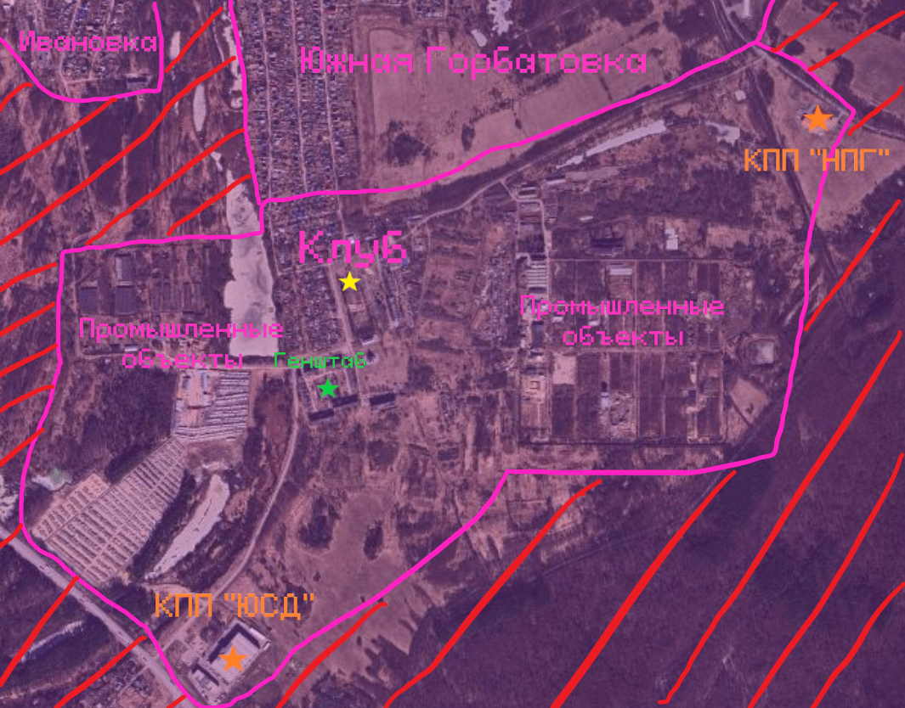
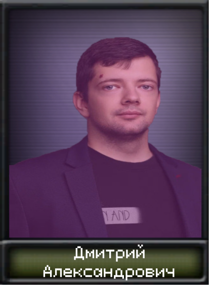
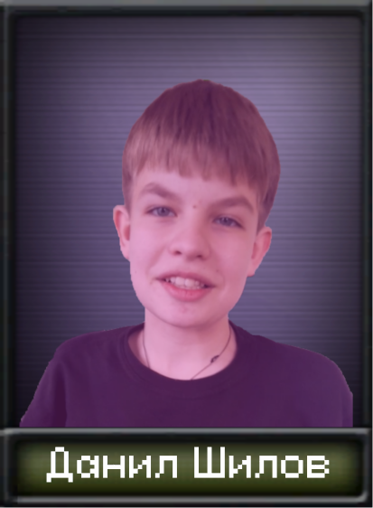
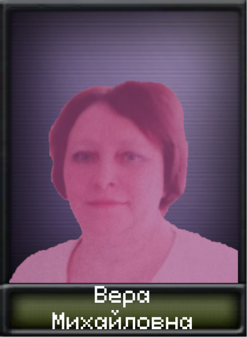
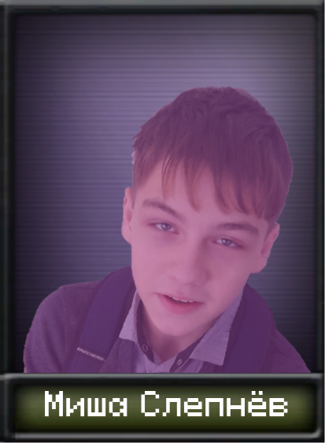
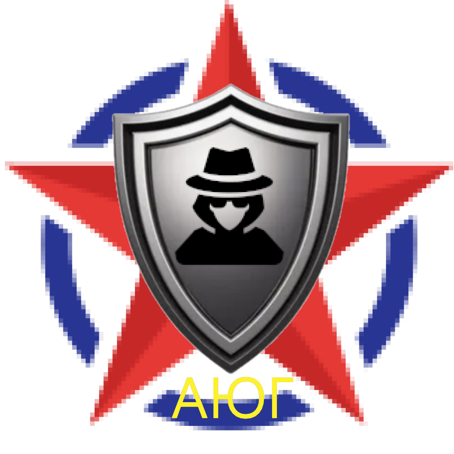

Основной сюжет
Совхоз Доскино - самая южная часть Горбатовки. Принадлежит Автозаводскому району Нижнего Новгорода. Через КПП "НПГ" (Нижегородская помощь Горбатовке) идёт помощь от Нижнего Новгорода. Совхоз Доскино от врагов защищает лес.


Главой Совхоза Доскино стал Дмитрий Александрович (Аллигатор). Имеет хорошие знания в области физики и математики. В его руках самая большая промышленность Горбатовки. Хорошо сотрудничает с Южной Горбатовкой. Ведёт Совхоз Доскино к интеграции с Южной Горбатовкой, чего сама Южная Горбатовка и хочет. Но Аллигатор пользуется этими хотелками. Его заклятый враг - Шилов.

Аллигатор сталкивается с большим внутренним сопротивлением. От личностей с ебанутыми идеями до прямых ненавистников Аллигатора. Одной из таких группировок является "Против Аллигатора" - крупнейшая и самая популярная оппозиционная группировка в Совхозе Доскино. Лидером "Против Аллигатора" является Шилов, но управляет он ей из Северовосточной Горбатовки. Второй человек "Против Аллигатора" Егор Кочетков. Он скрывается среди населения Совхоза Доскино.
Численность армии очень мала. Это важнейшая проблема Совхоза Доскино. Никто не хочет идти в светлое будущее с Аллигатором. Все хотят интеграции с Южной Горбатовкой. Аллигатор пользуется хотелками Южной Горбатовки в своих целях, вынуждая население Совхоза Доскино постоянно ждать и слушать бесконечные обещания о интеграции. Население не будет долго терпеть.
Сюжет разделяется
1) Аллигатор получает Шилова
Агентство Южной Горбатовки поймало Шилова и отправило его Аллигатору. Он устроил публичную казнь Шилова. Население отреагирует по разному. 1) Если "Против Аллигатора" не повержены, то начнётся гражданская война. Восставшие будут мстить за своего лидера Шилова. 2) Если Аллигатор расправился с "Против Аллигатора", то начнётся процесс интеграции с Южной Горбатовкой.
1.1) Шилов казнён ("Против Аллигатора" начинают войну)
Егор Кочетков вооружает своих единомышленников и они начинают восстание. За Аллигатора никто особо не хочет впрягаться. Южная Горбатовка отводит войска к Совхозу Доскино. В Совхозе Доскино восстают и простые люди/бывшие солдаты Аллигатора. Прозвали они себя "За справедливый мир". Они выступают противниками "Против Аллигатора". Одолев "Против Аллигатора", они планируют незамедлительное решение вопроса интеграции. Южная Горбатовка полностью вмешивается в конфликт на стороне "ЗСМ". Если Егор Кочетков победит всех врагов, то начнётся интеграция уже с Северовосточной Горбатовкой, и Горбатовка будет объединена. Если же выиграет "ЗСМ", то Совхоз Доскино станет частью Южной Горбатовки.
1.2) Шилов казнён ("Против Аллигатора" разгромлены)
Аллигатор начинает интеграцию с Южной Горбатовкой. Совхоз Доскино входит в состав Южной Горбатовки с небольшой автономией. Образуется Южногорбатовский союз.
2) Аллигатора свергает Мишена бабка

Мишена бабка ебанулась на старости лет. Она, насмотревшись турецких сериалов, решила, что хочет свою империю или королевство. При помощи Миши Слепнёва (Слепана) она основывает свою оппозиционную группировку. Миша Слепнёв участвует в пропаганде и расширении её группировки. Группировка называется "Справедливость в Совхозе Доскино". Подобрав момент, когда влияние Аллигатора опустилось до минимума, она свергает Аллигатора и устраивает публичную казнь Аллигатора. Население радуется о скорой интеграции с Южной Горбатовкой. Но наступают строжайшие времена. Мишена бабка начинает жёсткую смену устройства Совхоза Доскино. Она быстро решает проблему военнизации промышленности и расширяет армию. Среди населения начинает расти недовольство. Мишена бабка говорит, что этого требует Южная Горбатовка. Начинается серьёзнейший контроль за всем и вся в Совхозе Доскино. Проще говоря, Северная Корея 2.0.

2.1) Мишена бабка умирает
Мишена бабка умирает во время Великой Горбатовской войны. На престол входит Миша Слепнёв. Дух солдат падает. Главная задача Миши - удержаться у власти и поднять дух армии.
3) Шилов со своими единомышленниками свергает Аллигатора

Шилов обыграл агентство Южной Горбатовки. Южная Горбатовка оказывает давление на Совхоз Доскино, чтобы Аллигатор начал незамедлительную интеграцию. Шилов договаривается с "Князевской бандой". По их плану Северовосточная Горбатовка начинает войну против Южной Горбатовки. Разросшаяся группировка "Против Аллигатора" начнает восстание в Совхозе Доскино. Шилов принимает управление "Против Аллигатора" от Егора Кочеткова. Одолев Аллигатора, прошиловский Совхоз Доскино вступает в войну против Южной Горбатовки. После победы Горбатовка объединяется. Если Шилов и Северовосточная Горбатовка проигрывают, то Горбатовка объединяется под руководством "Школьного сообщества".